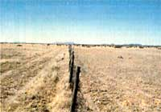

Fence line dividing the Barlite Ranch (Texas) on the left and a neighboring ranch on the right. Even with a cattle-stocking rate of more than double its neighbor, the Barlite produces more and superior graze, thanks to HRM.